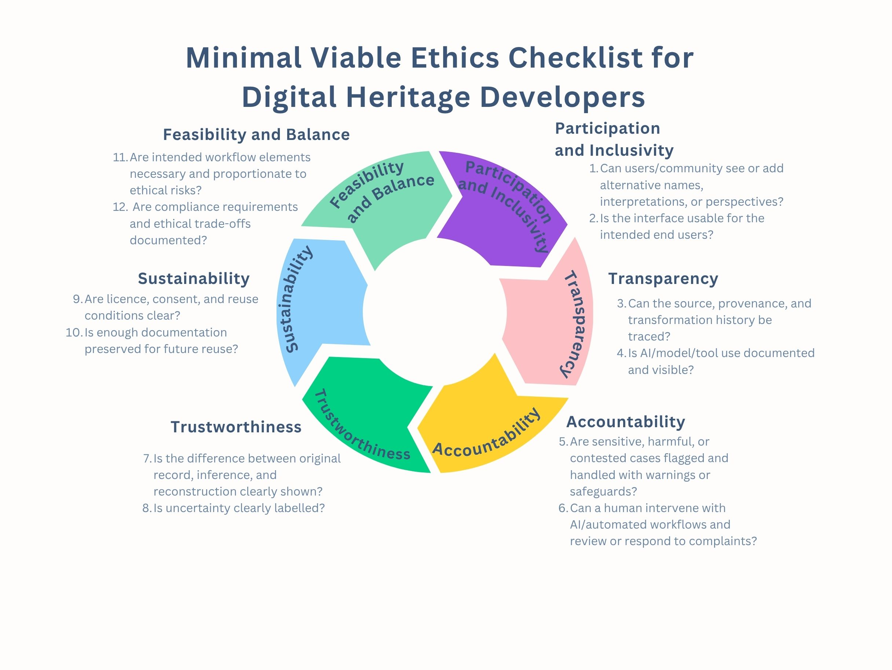

How to use this tool
- Read the minimum viable checklist and assess whether all checks have been met. If they have not, proceed to the next step.
- Visit the Ethics Risks and Best Practices Tool. For each of the six principles (Participation and Inclusivity, Transparency, Accountability, Trustworthiness, Sustainability of Preservation, and Feasibility and Balance): read the associated risks. If you judge a risk to be medium or high for your project, check the associated best practices and checklists.
- The tool helps you identify the relevant checklist for the risks you indicate. Use this checklist as a starting point for discussion with colleagues and revisit it throughout the development process.
- Document the ethical decisions you make. Include this paradata in the documentation of any output.
- If the Ethics Tool and related checklist do not adequately address all the ethical risks associated with your project, undertake a full ethics review in discussion with the project leadership and consulting the Project Handbook, the Developers Rulebook, and the Data Management Plan for project-level solutions.
Minimum Viable Ethics Checklist
A quick checklist of the most critical ethical considerations for digital heritage projects. Use this as a starting point to identify potential ethical issues before diving into the full framework.

Ethics Risks and Best Practices Tool
Sunburst Diagrams
Six separate sunburst diagrams — one for each main category. Each shows the subcategories, risks, best practices, and checklist items for that principle.
Ethics Risks and Best Practices Tool
Shared Checklist Panel
Click a Risk segment to tick it and reveal the shared best practices and checklist items for its subcategory in the side panel. Export your selected checklists.